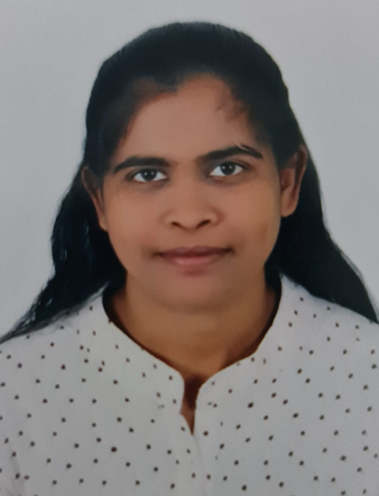

Jenilet J

Summary
Have more than 2+ years in experience as Document controller in the area of operational documentation management, including implementation of automated system generated documents to further updates and modification in construction and logistics field.
Education
- Bachelor of Engineering in Competer science from xyz
Work Experience
- Document Controller-ABC Comapny
Jan2021 to Till date
- Create filling and archiving system for documents.
- Check metadata according to the client’s requirements.
- Send workflow internally and follow-up.
- File documents in physical and digital records.
- Checked incoming documents for readiness to processing
- Logistics Executive - ABC School
Mar 2018 to Dec 2020
- Coordinate sea import and export and their respective documentation, customs clearance.
- Organize with transportation on shipment deliveries.
- Troubleshoot operation issues
- Work closely with internal team to meet client requirements.
- Closely update every issues and further consignment to the customer.
- Communicate and resolve client queries.
- Keeping all documents for future developments.
- Invoicing to client.
Skills
Awards and Certification
- Completed the course of ‘Programming in C’ from Data InfoTech Computer training Centre
- Participated in INTERNATIONAL CONFERENCE ON COMPUTING AND COMMUNICATION TECHNOLOGY
My Hobby
Contact